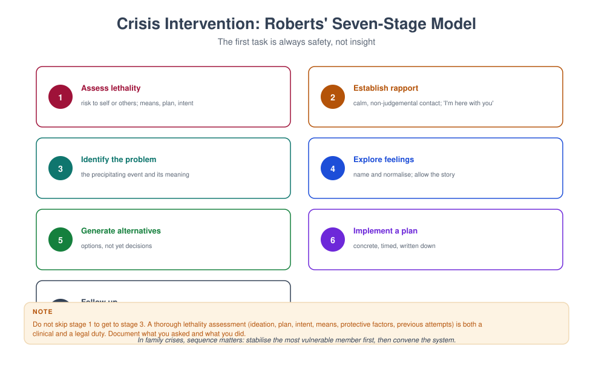
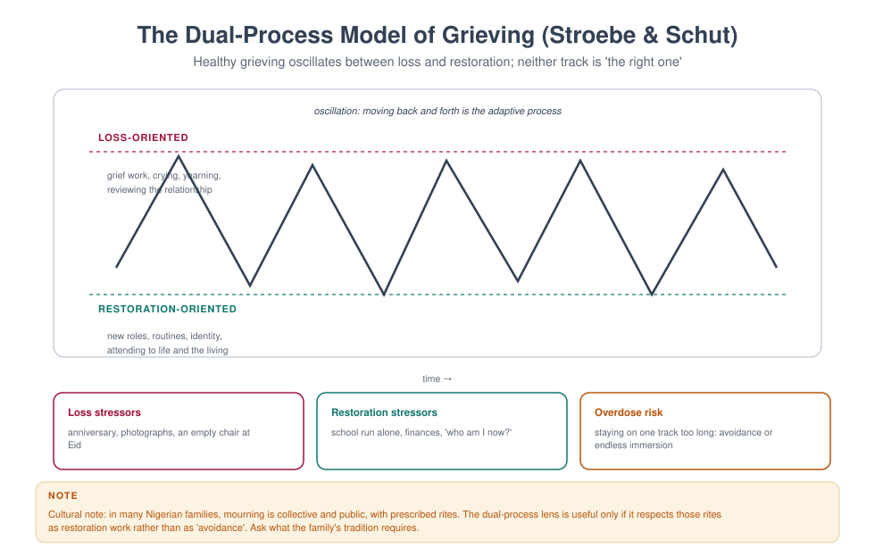

MFT 712 — Crisis Intervention Strategies
Course leader's summary. A crisis is not a bigger version of an ordinary session. It is a different clinical state with its own rules: safety before insight, structure before exploration, and short contacts with clear follow-up. This course will make you useful in the first hour.
How to use this book
The course is built around the first hour: what you do in the ten minutes after a disclosure of suicide, a violent incident, a sudden death, or a family that arrives in chaos. Read the scripts aloud. Under stress, you will use the sentences you have rehearsed, not the theory you remember.
1. Course description
Crises are the point at which families enter services most often and at which therapists feel least prepared. This course covers: crisis theory and the phases of a crisis; assessment of lethality and danger; suicide and self-harm; domestic violence; child protection emergencies; acute grief and bereavement; family crises (separation, disclosure, runaway, arrest); disasters and collective trauma; telephone and remote crisis work; and the organisational context of crisis services.
2. Learning outcomes
| # | Outcome | Assessed |
|---|---|---|
| LO1 | Assess a crisis using a structured model, and prioritise safety | Observed assessment |
| LO2 | Conduct a suicide risk assessment and co-create a safety plan | Skills test |
| LO3 | Manage acute family conflict and violence safely in session | Simulation |
| LO4 | Respond to acute grief, shock and disorganisation | Case study |
| LO5 | Work within the limits of a single session and a crisis team | Viva |
| LO6 | Document crisis work defensibly | Portfolio |
| LO7 | Protect yourself from vicarious trauma in crisis work | Reflective portfolio |
3. Assessment
| Component | Weight | Due |
|---|---|---|
| Simulated crisis assessment (30 min) | 30% | Week 6 |
| Safety plan portfolio (3 plans with rationale) | 25% | Week 10 |
| Written examination (case-based) | 25% | Week 16 |
| Crisis log and reflection (10 entries) | 20% | Ongoing |
4. The fifteen-week plan
| Week | Topic | Practical |
|---|---|---|
| 1 | What makes a crisis a crisis | Map a crisis in phases |
| 2 | The first ten minutes: safety, contact, structure | Opening drill |
| 3 | Crisis assessment and triage | Triage exercise |
| 4 | Suicide I: assessment | Observed risk interview |
| 5 | Suicide II: safety planning and means restriction | Safety plan lab |
| 6 | Simulated crisis assessment | Assessed |
| 7 | Self-harm and repeated crisis | Containment planning |
| 8 | Domestic violence and danger assessment | Safety planning with a victim |
| 9 | Child protection emergencies | Reporting rehearsal |
| 10 | Safety plan portfolio due; acute grief and bereavement | Death notification role-play |
| 11 | Family crises: runaway, arrest, disclosure, eviction | Multi-agency simulation |
| 12 | Disasters and collective trauma | PFA demonstration |
| 13 | Telephone, text and remote crisis work | Call simulation |
| 14 | The crisis team, handover and follow-up | Handover practice |
| 15 | Vicarious trauma and sustainable crisis work | Personal plan |
Week 1 — What makes a crisis a crisis
Definition. A crisis is a state of psychological disequilibrium in which a person's usual coping methods fail and their functioning is impaired, usually following a precipitating event that is perceived as a threat. It is time-limited (typically 4–6 weeks), dangerous (risk of harm), and an opportunity (people are more open to help than at any other time).
The four phases (Caplan).
- Impact / shock — disorganisation, disbelief, numbness.
- Tension and disorganisation — attempts to cope fail, distress rises, help-seeking begins.
- Mobilisation — active attempts to solve, often chaotic.
- Resolution or breakdown — adaptation, or chronic dysfunction.
The precipitant is not the whole story. A crisis occurs when a stressor meets a vulnerability. Two families can experience the same event and only one present in crisis. Assess both.
Family crisis is systemic. One member's crisis reorganises the household: roles shift, secrets surface, and previously stable patterns break. Your assessment is of the family's equilibrium, not only the identified person's.
Week 2 — The first ten minutes
Crisis work has a protocol. In the first ten minutes you do five things, in this order:
- Safety. Is anyone in immediate danger? Are you safe? Is there a weapon, a person at the door, an overdose already taken?
- Contact. Your voice, your pace, your presence. Lower your tone, slow your speech, sit down, say your name and your role.
- Structure. Tell them what is going to happen in the next hour. "I am going to ask you some difficult questions. Then we will make a plan together."
- Story. Let them tell it, but with a boundary: "Start from the beginning; we have twenty minutes."
- Mobilise help. Who is available? Who can come? What has helped before?
Sentences that work.
- "I am glad you told me. You are not in trouble."
- "I need to ask you some direct questions. They may feel intrusive. I am asking because I need to know how to keep you safe."
- "You do not have to solve this tonight. We need to get through the next twenty-four hours."
Sentences that do not work. "Everything will be fine." "You should not feel that way." "At least…" "Do you really mean that?"
Week 3 — Crisis assessment and triage

The seven stages (Roberts) provide a structure that survives chaos: assess lethality → establish rapport → identify the problem and precipitant → explore feelings → generate alternatives → implement a plan → follow up.
Triage: three questions.
- Is there immediate danger? (Weapon, overdose, assault in progress, child alone with a dangerous adult.)
- What is the appropriate level of care? (Emergency department, crisis team, same-week appointment, routine.)
- Who else needs to know? (Partner, school, social services, police, GP.)
Do not provide long-term therapy in a crisis. Your task is stabilisation, safety and connection to ongoing care. A crisis service that becomes the client's therapy creates dependence and denies the client the long-term work.
Week 4 — Suicide I: assessment
The epidemiology you need. Suicide is among the leading causes of death in young people; men die more often, women attempt more often; previous attempt is the strongest predictor; access to means matters; most people who die by suicide have communicated something to someone.
The structured assessment (ten domains). Ideation, plan, intent, means, previous attempts, protective factors, substance use, impulsivity, family history, current stressors — plus a direct question about what has kept you alive so far.
Asking.
Formulation and risk level.
| Level | Picture | Action |
|---|---|---|
| Low | Ideation without plan, strong protective factors, engaged | Safety plan, follow-up within 1 week, means counselling |
| Moderate | Ideation with plan, limited intent, some protective factors | Same-day mental health review, means restriction, daily contact |
| High | Plan, intent, means, recent attempt, agitation, intoxication | Do not leave alone; emergency department or crisis team; consider involuntary route |
Documentation. Record the questions and answers verbatim where possible, the risk level, the rationale, the plan, who was informed, and the review. If you judged risk lower than others might, state why.
Week 5 — Suicide II: safety planning
A safety plan is not a no-suicide contract. Contracts have no evidence base and can increase guilt. A safety plan is a written, collaborative, stepwise coping plan.
Six components (Stanley & Brown).
- Warning signs — the person's own early signals ("I stop answering my phone").
- Internal coping — things they can do alone ("walk to the mosque", "cold shower", "music").
- People and places that distract — social settings that reduce isolation.
- People to ask for help — names and numbers.
- Professionals and agencies — crisis line, clinic, emergency number.
- Making the environment safe — means restriction: who holds the medication, the keys, the pesticide.
Means restriction is the most effective single intervention. Ask directly: "What is in the house?" Ask the family to take control of it, and be specific about who, what, and where.
With families. The family's response matters: reduce blame, increase supervision without surveillance, and give the person a role in their own plan.
Week 6 — Simulated crisis assessment
Thirty minutes, unannounced scenario (suicide risk, domestic violence, or acute grief). Assessed on: safety first, contact and pace, structured assessment, formulation, plan, and documentation quality.
Week 7 — Self-harm and repeated crisis
Self-harm is often a regulation strategy, not a suicide attempt. Distinguish: function (relief, control, punishment, communication, feeling something), lethality, frequency, and hidden versus disclosed.
Working with repeated crises. Frequent attenders are often described as "manipulative" — a term that should be banned. The pattern usually reflects: an untreated disorder, chronic trauma, an unstable relationship system, or a service that rewards crisis and does not provide continuity.
The intervention is a plan, not a lecture. A written crisis protocol agreed with the person (what to do, who to call, when to come to hospital) reduces both crisis frequency and staff burnout.
Therapist boundaries. You cannot be available 24 hours. State your availability clearly, give the crisis route for out-of-hours, and do not give your personal number unless your service requires it and you have thought through the consequences.
Week 8 — Domestic violence and danger assessment
Danger assessment questions (adapted from the Danger Assessment).
- Has violence increased in frequency or severity in the last year?
- Has the partner ever used a weapon or threatened one?
- Has the partner ever tried to strangle or choke you?
- Has the partner threatened to kill you or the children?
- Is the partner violently or constantly jealous and controlling?
- Is there a separation in progress (the highest-risk period)?
- Does the partner have access to firearms?
- Has the partner ever forced sex?
- Is the partner using substances heavily?
- Has the partner threatened suicide?
Safety planning with a victim. Identify a safe place, a code word, documents and money, a bag prepared, children's needs, transport, and the number of a specialist service. Do not tell her to leave as though leaving were simple; leaving is the most dangerous period, and she is the expert on her own risk.
Do not conduct conjoint sessions where coercive control is present. Do not inform the abuser of the disclosure. Know your mandatory reporting obligations — and their limits (in many jurisdictions, adult IPV is not mandatorily reportable, but child exposure may be).
Week 9 — Child protection emergencies
Signs requiring immediate action.
- A disclosure of abuse (physical, sexual, emotional, neglect).
- Unexplained injury inconsistent with the explanation.
- A child who is frightened of a specific adult.
- A child left alone or in the care of someone unable to protect them.
- Sexualised behaviour beyond developmental norms.
- A parent who cannot or will not protect the child.
Procedure.
- Respond calmly; do not interview in detail; use open prompts only ("tell me what happened").
- Record verbatim, promptly, with the child's words and your questions.
- Do not promise secrecy.
- Report to the designated safeguarding lead or the appropriate authority, following your service's procedure and your jurisdiction's law (in Nigeria, the Child Rights Act and state child protection structures; the police family unit; the state ministry responsible for social welfare).
- Tell the child what will happen next and who will be involved.
- Document everything, including the advice you received and the time you acted.
Week 10 — Acute grief and bereavement

Normal acute grief includes waves of yearning, disbelief, anger, guilt, intrusive images, and a sense of unreality. It is not a disorder. It becomes complicated when it is prolonged, severe, and impairing (prolonged grief disorder in ICD-11/DSM-5-TR).
In the first weeks: accompany, do not treat. Practical help, information, permission to grieve, and continuity. Do not rush to meaning-making; do not say "he is in a better place" unless you know the family's faith.
Sudden and traumatic deaths (accident, homicide, suicide) add shock, anger, stigma and, for suicide, a family burden of blame and secrecy. Address the stigma explicitly.
Children and grief. Children grieve in bursts, return to play, and ask direct questions. Be honest, use clear language ("died", not "lost"), and reassure them that they are not to blame.
The dual-process frame. Healthy grieving oscillates between loss-oriented and restoration-oriented activity. Two errors: staying only on the loss track (rumination, avoidance of life) and staying only on the restoration track (avoidance of grief). The family's culture prescribes which is expected; work within it.
Week 11 — Family crises
| Crisis | Immediate priorities | Common errors |
|---|---|---|
| Adolescent runaway | Safety, whereabouts, who they trust, why they left | Interrogating the parents first; treating the adolescent as the problem |
| Arrest or imprisonment | Practical information, children's needs, shame, finances | Moralising; ignoring the children |
| Disclosure of a secret (affair, paternity, HIV, debt) | Containment, safety, who needs to know and when | Forcing immediate disclosure; colluding in concealment |
| Eviction or financial collapse | Practical referral; safety; children's schooling | Psychologising material reality |
| Sudden separation | Safety, children's stability, legal referral | Assuming reconciliation is the goal |
| Death of a child | Presence, not technique; couple's survival | Interpreting; taking sides in blame |
Week 12 — Disasters and collective trauma
Psychological first aid (PFA) — five elements: safety, stabilisation, connection, self-efficacy, hope. It is not debriefing. Mandatory psychological debriefing has been shown to be ineffective and possibly harmful; do not do it.
Principles in collective events.
- Attend to basic needs first (shelter, food, information, family reunification).
- Do not pathologise normal distress.
- Reconnect people to their own networks and rituals; community and faith resources are usually more powerful than clinical intervention in the acute phase.
- Identify the vulnerable: unaccompanied children, the injured, the bereaved, those with prior trauma, and responders.
- Plan for the medium term: most distress resolves; a minority need treatment at 4–12 weeks.
Week 13 — Telephone, text and remote crisis work
Advantages. Access, immediacy, anonymity, reach into areas with no services.
Risks. Loss of non-verbal information, difficulty verifying location, inability to intervene physically, and boundary erosion.
Protocol for a remote crisis contact.
- Verify identity and location at the start ("where are you right now?").
- Establish whether anyone is with them.
- Assess risk verbally, more slowly than you would in person.
- Agree a concrete plan for the next hour.
- Record the number they called from and a safe contact.
- If risk is high, keep them on the line while arranging help.
Week 14 — The crisis team and continuity
Handover. A good handover is structured: presenting problem, risk level and basis, what has been done, what is planned, who is responsible, and when the next contact is. Use a standard format (e.g. SBAR: Situation, Background, Assessment, Recommendation).
Follow-up is the intervention. Crisis care that does not follow up fails. Agree a date before the person leaves, and make the contact proactive.
Working with other agencies. You will share information; know the legal basis, share the minimum necessary, and record what you shared and why.
Week 15 — Vicarious trauma and sustainable practice
Crisis work takes a physiological toll. Warning signs: intrusive images, sleep disruption, cynicism, numbness, dread before shifts, irritability at home, and loss of pleasure in work.
Protective practices. Debrief structurally (not emotionally) after critical incidents; use supervision; keep caseload diversity; maintain boundaries on availability; sleep; exercise; and have your own therapist.
The organisational dimension. Individual self-care cannot compensate for an unsafe service. If you are carrying 40 crisis cases with no supervision, that is a management problem, and saying so is part of professional practice.
Glossary
Containment — the provision of structure and safety so that overwhelming material can be held. Crisis — a time-limited state of disequilibrium in which usual coping fails. Danger assessment — structured assessment of lethality risk in domestic violence. Means restriction — reducing access to methods of self-harm; the most effective suicide prevention measure. Psychological first aid (PFA) — a five-element supportive intervention after a critical event. Safety plan — a written, collaborative, stepwise plan for managing a suicidal crisis. Triage — the prioritisation of care according to urgency and risk.
Self-assessment
Multiple choice
1. The first task in a crisis is: (a) insight (b) safety (c) diagnosis (d) history
2. Roberts' model begins with: (a) rapport (b) lethality assessment (c) plan (d) follow-up
3. A no-suicide contract is: (a) evidence-based (b) not evidence-based; a safety plan is preferred (c) legally required (d) sufficient alone
4. The highest-risk period in domestic violence is: (a) during pregnancy (b) separation (c) the first year (d) after counselling
5. Psychological debriefing after disasters is: (a) recommended for all (b) not recommended and potentially harmful (c) legally required (d) equivalent to PFA
6. Means restriction is important because: (a) it is easy (b) it reduces the probability of a lethal attempt (c) it is legally required (d) it satisfies families
7. Conjoint therapy is contraindicated when: (a) there is conflict (b) there is coercive control (c) there is grief (d) there is low income
8. A child's disclosure of abuse should first be: (a) investigated by you (b) recorded verbatim and reported (c) discussed with the parents (d) kept confidential
9. Prolonged grief disorder is distinguished from normal grief by: (a) crying (b) duration, severity and impairment (c) cultural expression (d) family conflict
10. A good crisis handover includes: (a) only the diagnosis (b) situation, background, assessment, recommendation, and next contact (c) your opinion of the family (d) the full case notes
Answer key
1 b · 2 b · 3 b · 4 b · 5 b · 6 b · 7 b · 8 b · 9 b · 10 b
Short answer
- List the five things you do in the first ten minutes of a crisis.
- Give six components of a safety plan.
- Name three questions from a danger assessment.
- What are the five elements of psychological first aid?
- Why is follow-up the intervention in crisis work?
Essay (choose one, 2,000 words)
- "Crisis is both danger and opportunity." Discuss with a case, including what you did and what you would change.
- Analyse the ethical tensions in responding to a suicidal adolescent whose parents refuse hospital admission.
- Critically evaluate the evidence on psychological debriefing and its implications for crisis services.
Further reading
- Roberts, A. R. (2005). Crisis Intervention Handbook (3rd ed.). Oxford University Press.
- James, R. K., & Gilliland, B. E. (2017). Crisis Intervention Strategies (8th ed.). Cengage.
- Stanley, B., & Brown, G. K. (2012). Safety planning intervention. Cognitive and Behavioral Practice, 19(2), 256–264.
- Hobfoll, S. E. et al. (2007). Five essential elements of immediate and mid-term mass trauma intervention. Psychiatry, 70(4), 283–315.
- Campbell, J. C. (2002). Danger Assessment.